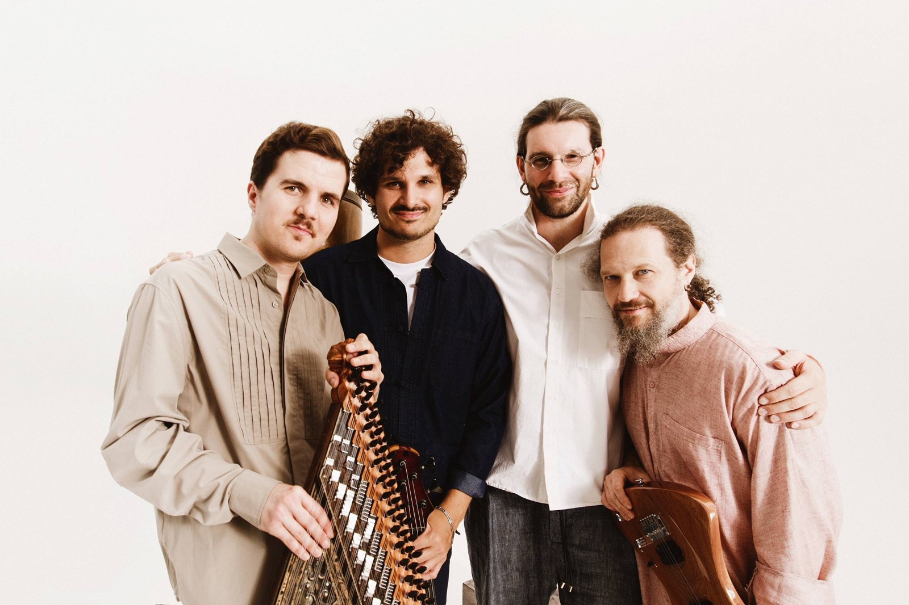

Треугольный сон – Треугольный сон
26 ноября в «Мосты холле» проект «Треугольный сон» представит свой дебютный альбом – одноимённую пластинку, которая выходит на FANCYMUSIC. В ней восемь композиций на стыке мировой музыки, этно-фьюжна и современной модальной музыки: хэндпан и табла, персидский томбак и арабский канун, грузинский чонгури и безладовая гитара.
Проект «Треугольный сон» (Triangular Dream) существует с 2018 года, и этот альбом – результат долгого пути. Изначально группа стремилась играть мировую музыку и этно-фьюжн. Однако в процессе авторы вышли за рамки привычных шаблонов и стереотипов и сформировали собственный почерк. Музыка «Треугольного сна» – не просто смешение стилей, а живой диалог культур через звук и форму, объединённый широким спектром перкуссии и других инструментов.
«Треугольный сон» – это и название одной из композиций, в основе которой идея погружения в сон внутри другого сна. Заглавная композиция буквально уводит вглубь подсознания: с помощью трёх ритмических модуляций музыка плавно перемещает слушателя между тремя разными измерениями.
Это глубокая музыка, полная скрытых деталей, которая требует от слушателя вовлечённости и внимания. В «Лабиринте» Хассан Белькасем Беналиуа поёт собственный текст на арабском. В записи участвовали гости: саксофонист Олег Маряхин («Фироз», «Прощание»), Андрей Демиденко (вокал и рояль в «Радуге») и Келли Тома на критской лире («Радуга»).
Альбом записан на студиях «Синелаб» и Divian Sound, сведение и мастеринг – Геннадий Лаврентьев. На обложке – картина Дарьи Лузик.
Farewell – это визитная карточка нашего проекта: с этой композиции начался «Сон», но на альбоме она последняя. Название говорит само за себя.


Презентация альбома
26 ноября 2026, четверг, 20:00–22:00
«Мосты холл» · Москва, Вознесенский пер., 14
«Треугольный сон» впервые сыграет вживую программу дебютного альбома. К группе присоединится саксофонист Олег Маряхин, который участвует и в записи. Кроме того, прозвучат несколько композиций со следующего альбома. Концерт пройдёт на новой для группы площадке – в «Мосты холле», небольшом зале с театральной сценой и хорошим звуком.
Исполнители
- Кирилл Ошеров, хэндпан, томбак, перкуссия
- Геннадий Лаврентьев, табла, скрипка, безладовая гитара
- Паата Чакаберия, бас, чонгури
- Хассан Белькасем Беналиуа, канун, виолончель, вокал
- Олег Маряхин, саксофон (гость)
Об артистах
«Треугольный сон» создаёт и играет собственные композиции и импровизации на стыке мировой этнической музыки, фьюжна и современной модальной музыки. Участники изучают музыкальные традиции вместе с их носителями – профессиональными музыкантами из разных стран. В музыке группы – стили и мелодии индийской, греческой, иранской, турецкой, грузинской и алжирской традиций. Название отражает понятие триединства, которое есть во многих духовных традициях.
Кирилл Ошеров – создатель и продюсер проекта. Играет на томбаке (персидский кубковый барабан) и хэндпане, учился у мастеров рамочного барабана и томбака Зохара Фреско и Педрама Хаварзамини. Много лет руководит перкуссионной школой.
Геннадий Лаврентьев – мультиинструменталист, композитор и продюсер. С 1997 года изучает индийские барабаны, несколько лет жил и работал в Индии. В 2002 году с группой Orange Street получил гран-при фестиваля Great Indian Rock, в 2002–2010 годах выпустил несколько альбомов с Da-Saz. Проекты с его участием побеждали на Russian World Music Award. Пишет музыку для театра, на его счету больше десяти авторских релизов.
Паата Чакаберия – бас-гитарист и исполнитель на грузинском чонгури, играет на безладовом басу. Учился в Московском государственном училище эстрадно-джазовой музыки, изучал грузинский фольклор, афро-кубинскую музыку и южноиндийскую систему карнатик. Преподаёт и исполняет коннакол, официальный представитель World Konnakkol Academy.
Хассан Белькасем Беналиуа – музыкант из Алжира, играет на кануне и виолончели. Был участником Национального симфонического оркестра Алжирской оперы, получил первую премию на международном симпозиуме кануна в Алжире. С 2019 года работает в России, в 2021 году получил первую премию по виолончели на международном конкурсе имени Прокофьева. Пишет музыку для театра и сериалов, в том числе для спектакля «Пророк» по книге Халиля Джебрана.
Музыканты группы играли с Россом Дейли, Эфреном Лопезом, Келли Тома, Зохаром Фреско, Shankar Mahadevan, Hang Massive, Radik Tulush (Huun Huur Tu), Namgar, Сергеем Старостиным, Игорем Бутманом, группой «Воскресенье», Пелагеей и другими.
Ссылки на страницы группы
О лейбле
FANCYMUSIC – музыкальный рекорд-лейбл, направленный на издание новой актуальной русской музыки различных направлений. Это свободная платформа для широкого спектра современных российских композиторов и музыкантов, а также основа для появления новых имён.
Ссылки на страницы лейбла
Контакты для прессы
- КонтактКирилл Ошеров, создатель проекта
- Telegram@kirill_osherov
Пресс-релиз
FANCYMUSIC · Пресс-релиз · 20 ноября 2026